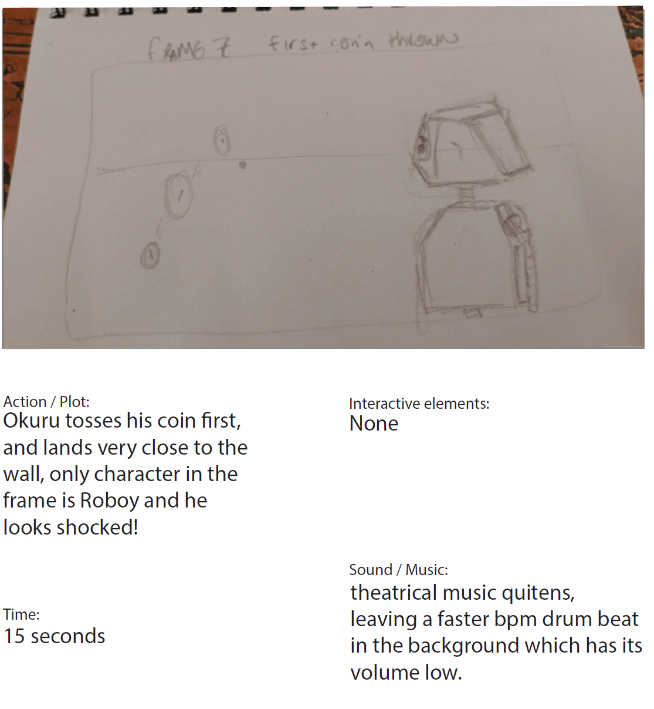
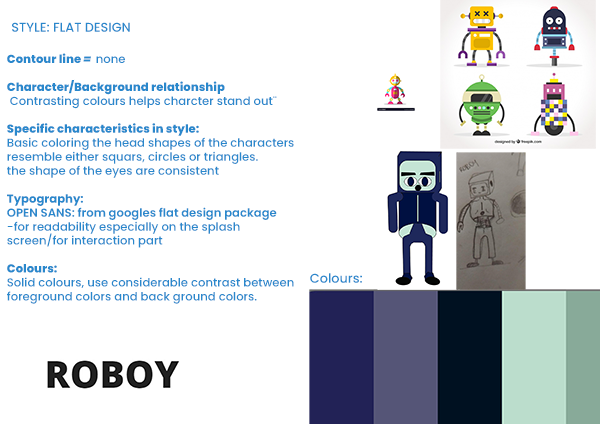
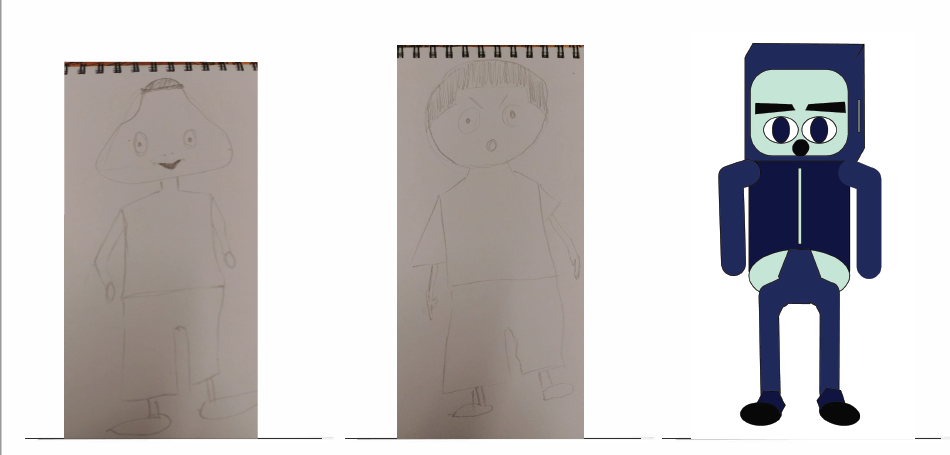

For this assignment we got to explore the basics of character design and story telling.
link to pdf fileFor this task I was tasked with creating a story, I started of thinking about what kind of message I wanted to convey in my story. The message I wanted to convey is to show the lengths friends are willing to go for one another and that it is always better to take the shot even when the chances of success seem slim. The two main themes at play in the message of this story are very relatable as most humans have friends and most people are faced at some point in their lives with obstacles that can make you want to give up.
For this reason I decided to play further on the message of the story in terms of its relatability and chose to make the main display of friendship between tow characters, a robot and his owner/friend. This is intended to create some distance between the consumer and the actual story relying on the message to be the most relatable aspect of the story.
I then went on to create the storyboard and the flow of the story starts to become clear. Every scene has been annotated with regards to action/plot, interactive elements, sound/music and duration of the scene. You can find an example below.
By completing the storyboard I gained insight into how the story could flow best, as it became clear to me which parts of the story were important for the message to come across and which parts were not.
I was presented a selection of styles and artist which I could draw inspiration from, I chose to go with flat design as it was what felt the most accurate for my story. I also included a font style which was Open Sans, I chose this font with readability in mind. I opted for a very readable and simple font which would not take the user away from the story and the message of the story.
I then went on to flesh out my characters using a provided worksheet to guide me.
From left to right the characters are Okuru, Jaja and Roboy. Only Roboy is completely fleshed out, the other two although designed are not completely fleshed out. Aside from that fact, I decided to give okuru a triangular shaped head, the reason is for that is to illustrate that he is a little shady, his eyes are also designed to be smaller, so that the consumer/viewer does not necessarily feel attached to him. As for Jaja, the only seeming human character, I decided to give him a very large head, which gives him a child like quality, this is so that the viewer can feel most alike Jaja than the other two. The reason he is the one with the most humanoid features is to do with his role in the story as his role is intended to be an embodiment of what it is to be humane, which is to be kind to everything including Robots

Above is an image of Roboy in different expressions, and below is an all round view of his build.

The last part of this assignment was to create a sprite sheet animation. Since this was my first ever attempt at creating a sprite animation, I decided to focus on a scene where Roboy is walking.